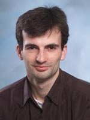

|
Welcome
to my website!
For academic biography with links to my
dissertations and other scientific work, go to my University
of Ottawa page. My publications, lectures, and services are also
archived at www.videorecognition.com
portal.
For
free download of the Ontario Ministery of Health approved Nouse® (nose and
mouse) hands-free computer control software for users with
disabilities that I have invented, go to www.nouse.ca.
For
other provided services and community contributions, including:
consulting in Video
Recognition, piano
tuning, guitar accompaniment,
gymnastics / trampoline training, go to our family company's
website www.IVIM.ca.
For
music and songs composed by Dmitry, and other creative projects: start
from "Bonjour
Mon Amour" or "First Day
of Love".
Any of us can be reached at [name]@gorodnichy.ca or
[name]@ivim.ca.
For family pictures and videos: google +, youtube,
for community activities:
Dmitry O. Gorodnichy received , ,
For his contributions to science and community, he has been awared the Outstanding Scientific Achievement Award from the
National Research Council of Canada, the Young Investigator Award from
the Canadian Image Processing and Pattern Recognition Society, the
Cultural Diversity Leadership Award from University of Alberta, and named
the Leader of Tomorrow by the Canadian Royal Society Academy of
Science's Partnership Group for Science and Engineering.
He is the father of four daughters, speaks four languages, and supports Waldorf education and
non-GMO farming.
Among other things, he enjoys playing soccer, tunes
pianos, trains
gymnastics and composes songs.
For academic work and publications go to: University
of Ottawa, LinkedIn, ResearchGate, www.videorecognition.com or a more frequently updated mirror gsite at dmitry.gorodnichy.ca
For musical compositions, family stories and creative
projects go to: music.gorodnichy.ca, Google+, Youtube, Facebook
For matters related to the Nouse® (Nose as Mouse) technology and other community services, go to: www.Nouse.ca and www.IVIM.ca I'm a CBSA scientist
and University of Ottawa professor working
in the area of video analytics, biometrics and automated
border control; also the inventor of the Ontario
Ministry of Health approved Nouse®
(Nose as Mouse) technology for individuals with disabilities throught the world, and co-founder of IVIM Inc., a family run business to
I am also the co-founder of IVIM Inc and the inventor of
the Nouse®
(Nose as Mouse) technology,
which is a hands-free computer control solution approved by the for users with disabilities and which can be
downloaded from www.nouse.ca.
Among other things, I tune
pianos, train
gymnastics to my kids and compose songs.
Enjoy
your visit!
A more frequently updated mirror of this website is here.
We support midwifery, Waldorf education and
non-GMO farming...
|
|